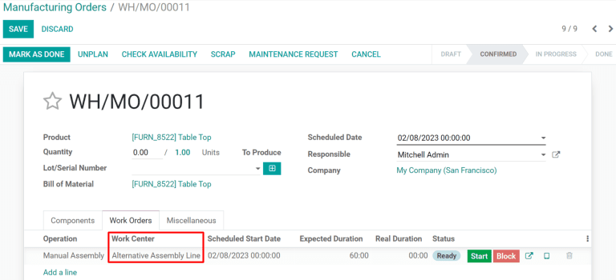

Gestionar órdenes de trabajo usando los centros de trabajo¶
Fabricación de Odoo le permite a las órdenes de trabajo ejecutarse en centros de trabajo específicos. Cuando se crea una orden de fabricación para un producto, cualquier orden de trabajo enumerada en la pestaña Operaciones de la lista de materiales del producto (LdM) se creará automáticamente y se asignará a un centro de trabajo específico. Las órdenes de trabajo se pueden gestionar en el módulo Fabricación al seleccionar .
Para usar centros de trabajo, debe estar activada la función Órdenes de Trabajo. Para hacerlo, vaya al módulo Fabricación , seleccione , y active la casilla junto a Órdenes de Trabajo. Los centros de trabajo se pueden crear y gestionar si selecciona .
Crear un centro de trabajo¶
Dentro del módulo Fabricación, seleccione . El formulario del centro de trabajo se puede llenar de la siguiente manera:
Nombre del centro de trabajo: dele al centro de trabajo un nombre claro que describa el tipo de operaciones para las que se usará.
Centros de trabajo alternativos: especifíque un centro de trabajo alternativo para que ahí se ejecuten las operaciones si el centro de trabajo principal no está disponible.
Código: asinge un código de referencia al centro de trabajo
Horas de trabajo: defina el número de horas semanales en las que se puede usar el centro de trabajo.
Empresa: seleccione la empresa a la que le pertenece el centro de trabajo

Establezca estándares para la productividad del centro de trabajo¶
La pestaña Infromación General en el formulario del centro de trabajo le permite asignar objetivos de productividad al centro de trabajo:
Eficiencia de tiempo: se usa para calcular la duración esperada de una orden de trabajo en el centro de trabajo. Por ejemplo, si normalmente una orden de trabajo tarda una hora en realizarse y la eficiencia está establecida en 200%, la orden tardará 30 minutos en completarse.
Capacidad: el número de operaciones que se pueden ejecutar de manera simultánea en el centro de trabajo.
Objetivo de la eficacia general del equipo: el objetivo para la eficacia en el centro de trabajo
Tiempo antes de la producción: tiempo establecido que se requiere antes de que comience el trabajo
Tiempo después de la producción: tiempo de descanso o limpieza que se requiere después de que se terminó el trabajo
Costo por hora: el costo operacional del centro de trabajo por una hora
Cuenta analítica: la cuenta dónde se debe registrar el costo del centro de trabajo

Asignar equipo a un centro de trabajo¶
Al usar la pestaña Equipo, es posible asignar piezas de equipo específicas a un centro de trabajo. La siguiente información se mostrará para cada pieza de equipo que agregue:
Nombre del equipo: nombre de la pieza de equipo
Técnico: el técnico responsable de darle mantenimiento al equipo
Categoría del equipo: la categoría a la que pertenece el equipo
Tiempo medio esperado entre fallos: la cantidad promedio de tiempo que se espera que el equipo funcione antes de fallar.
Tiempo medio de recuperación: el tiempo promedio que tarda el equipo en recuperarse para volver a ser completamente funcional de nuevo
Próxima falla estimada: un estimado de cuándo ocurrirá el siguiente fallo del equipo

Nota
El Tiempo medio esperado entre fallos, el Tiempo medio de recuperación y la Próxima falla esperada se calculan automáticamente con base en datos anteriores de fallos, si es que existen.
Integración de dispositivos IoT¶
La pestaña Activadores de IoT permite la integración de dispositivos IoT con un centro de trabajo:
Dispositivo: especifica el dispositivo IoT que se activará
Clave: la clave de seguridad para el dispositivo
Acción: la acción para activar el dispositivo IoT

Caso de uso: configure un centro de trabajo alternativo¶
Cuando un centro de trabajo tiene completa su capacidad, no puede aceptar nuevas órdenes de trabajo. En lugar de esperar a que el centro de trabajo esté disponible, es posbile especificar un centro de trabajo alternativo donde se ejecutarán las órdenes de trabajo excedentes.
Comience creando un nuevo centro de trabajo. Configure la pestaña Equipo para que tenga el mismo equipo que el centro de trabajo principal. Esto garantizará que se ejecuten las mismas tareas en ambos centros de trabajo. Vaya al centro de trabajo principal e incluya un nuevo centro de trabajo en el campo de selección Centros de trabajo alternativos.
Ahora, cree una nueva orden de fabricación que use el centro de trabajo principal para una de sus operaciones. El centro de trabajo principal se seleccionará de manera automática para la operación en la pestaña Órdenes de trabajo. Después de confirmar la orden de fabricación, haga clic en el botón Planear que aparece del lado superior izquierdo del formulario.

Si el centro de trabajo principal tiene completa su capacidad, el centro de trabajo seleccionado para la operación se cambiará automáticamente por el centro de trabajo alternativo.
Monitoree el rendimiento del centro de trabajo¶
Puede ver el rendimiento de un centro de trabajo individual si selecciona y hace clic en un centro de trabajo. Puede ver una variedad de métricas en el lado superior derecho del formulario que muestran el rendimiento del centro de trabajo:
Eficacia general del equipo: el porcentaje de tiempo que el centro de trabajo fue totalmente productivo.
Pérdida: la cantidad de tiempo perdido a causa de interrupciones en el trabajo
Carga: la cantidad de tiempo que le tomará completar la carga de trabajo actual
Rendimiento: la duración real del tiempo de trabajo mostrado como porcentaje de la duración esperada